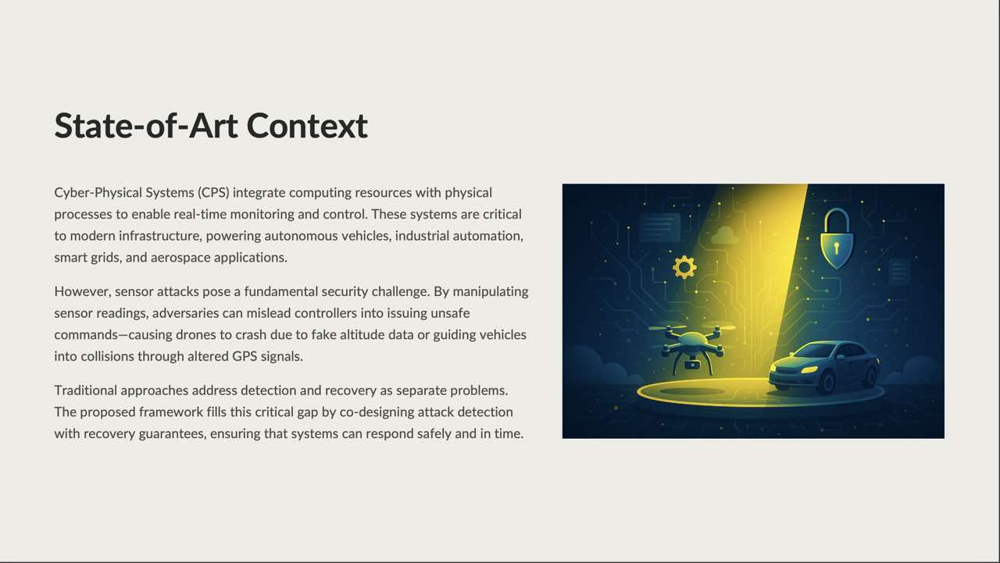
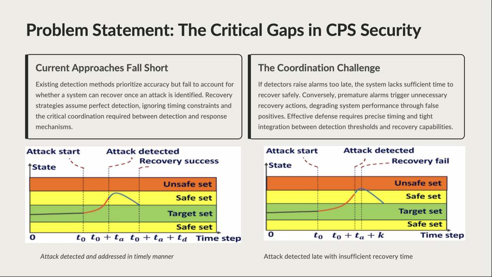
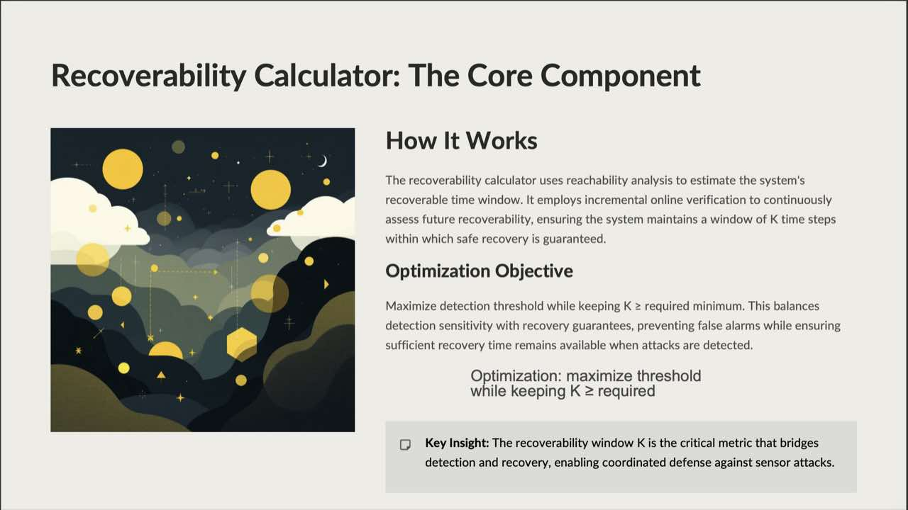
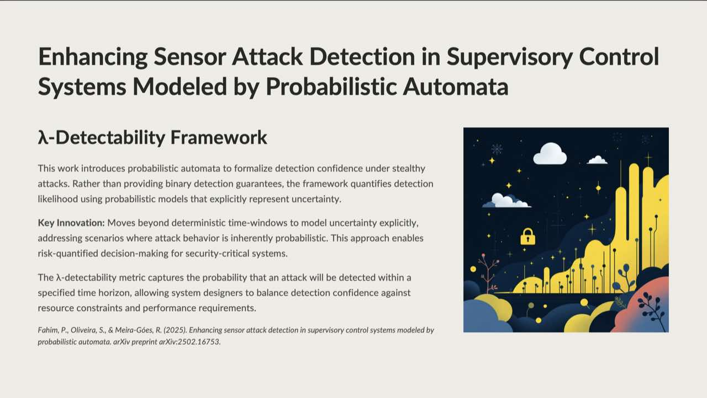
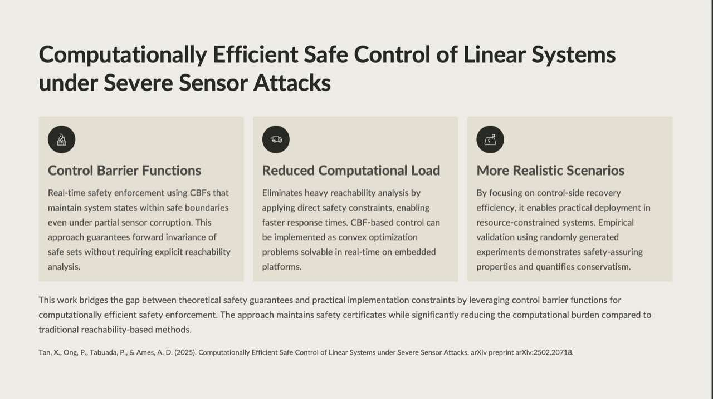
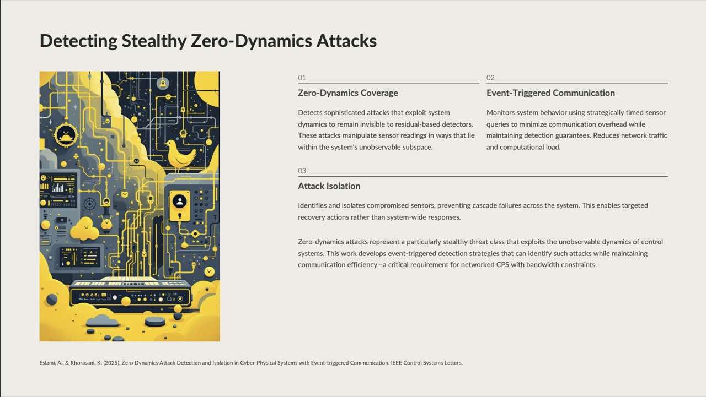
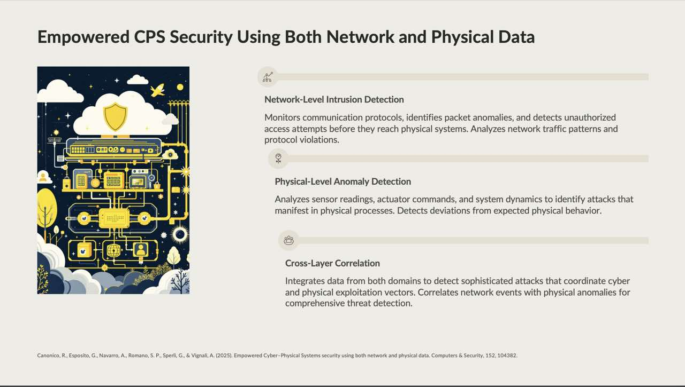
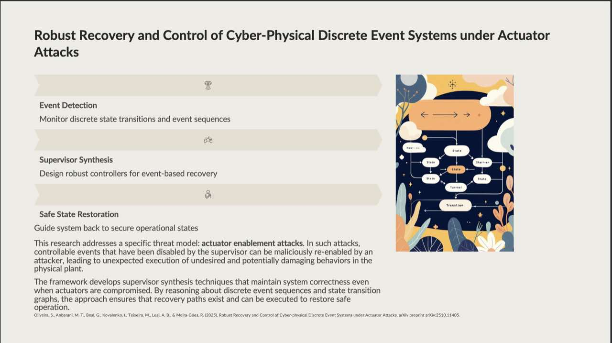

This presentation proposes a recovery-guaranteed sensor attack detection framework for cyber‑physical systems (CPS).
Unlike prior work that treats detection and recovery separately, the method co-designs detection thresholds with
online recoverability verification, ensuring alarms are raised only when there remains enough time (a window of K steps)
to safely recover. The architecture integrates residual calculation, state authentication with bounded error, incremental
reachability-based recoverability estimation, and dynamic threshold adjustment that tightens or loosens sensitivity to
guarantee recovery while minimizing false alarms. Validation spans vehicle platoon, aircraft pitch, and lane-keeping simulators,
plus a physical 4‑wheel testbed, demonstrating zero missed recovery windows across bias, delay, and replay attacks.

Problem: sensor attacks in CPS can cause unsafe control actions.
Motivates CPS security: autonomy, industrial automation, smart grids, aerospace; sensor spoofing can crash drones or mislead vehicles. Current approaches treat recovery and detection as separate problems, leading to scenarios where alarms arrive too late for safe intervention or too early causing unnecessary disruptions. The slide introduces the critical challenge of ensuring both timely detection and guaranteed recovery in safety-critical systems where delayed responses can lead to catastrophic failures.
2) Motivation
Detection and recovery traditionally handled separately.
Calls for a unified framework that coordinates detection decisions with recovery capabilities in real time. This slide highlights the fundamental limitation of existing approaches where detection systems raise alarms without considering whether sufficient time remains for the control system to safely recover. The gap between detection and recovery planning creates scenarios where systems either miss critical windows for safe intervention or generate excessive false alarms that degrade operational efficiency.
3) Problem Statement — Critical Gaps

Late alarms → no time to recover; early alarms → false positives.
Highlights timing/coordination challenge: sensitivity vs specificity trade‑off, ensuring alarms arrive with sufficient recovery margin. The core technical challenge is determining the optimal detection threshold that maximizes sensitivity to attacks while guaranteeing the system retains a minimum K-step window for safe recovery. Traditional approaches fail because they set static thresholds without real-time verification of the system's current recoverability state, leading to either missed attacks or unnecessary operational disruptions that impact system performance and user trust.
Defines attack classes (bias, delay, replay) and real‑time constraints that make recovery‑aware detection necessary. Bias attacks inject constant or slowly varying offsets into sensor readings, delay attacks introduce temporal misalignment between measurements and their timestamps, while replay attacks retransmit previously captured legitimate sensor data to mask current malicious activities. Each attack type has unique challenges for detection systems as they can remain stealthy by staying within normal operational bounds while gradually pushing the system toward unsafe states, requiring sophisticated detection mechanisms that can distinguish malicious deviations from benign noise.
End‑to‑end loop: compute residuals; online check of recoverable window K; adapt threshold to maintain K≥required; raise timely alarms. The framework continuously monitors system state deviations through residual calculations, simultaneously verifying whether the current state remains within a K-step recoverable region using reachability analysis. Based on this real-time recoverability assessment, detection thresholds are dynamically adjusted. This tightens when recovery margins are healthy and loosening when the system approaches critical boundaries. This ensures alarms always provide sufficient lead time for safe intervention while minimizing false positives during normal operation.
Each module collaborates to balance false alarms against recovery feasibility under real‑time constraints. The residual calculator compares predicted and measured states, the error estimator bounds uncertainty in state estimation, and the authenticator verifies whether observations fall within acceptable bounds given the error model. The recoverability calculator performs incremental reachability analysis to determine the K-step recovery window, while the threshold adjuster optimizes detection sensitivity subject to maintaining minimum recovery guarantees. This creates a closed-loop system where detection and recovery planning are inseparable and mutually reinforcing components.
Authentication: Bounded‑error state estimates that account for both process noise and measurement uncertainty, providing provable guarantees on state estimation accuracy even under normal conditions without attacks.
Incremental verification: Online recoverability windows computed using efficient reachability analysis that updates incrementally at each time step, avoiding costly full recomputation of safe sets and enabling real-time operation.
Threshold adjustment: Optimize sensitivity subject to K≥required by solving a constrained optimization problem that maximizes detection capability while maintaining formal recovery guarantees at all times. This ensures a balance between security and operational efficiency.
8) Recoverability Calculator (Core)

Reachability‑based K‑step window with online, incremental checks.
Optimization objective: maximize threshold while keeping recoverability window K above a required minimum. The calculator uses set-based reachability techniques to compute forward reachable sets from the current estimated state under all possible control inputs, determining the maximum number of time steps K before the system would exit the safe operating region. By leveraging incremental computation methods and exploiting the structure of linear time-invariant systems, this module achieves real-time performance suitable for closed-loop operation in resource-constrained embedded platforms commonly found in cyber-physical systems.
Vehicle platoon, aircraft pitch control, lane keeping; bias/delay/replay attacks; embedded real‑time testbed demonstration. The validation spans diverse cyber-physical domains with different dynamics and safety requirements, testing the framework against three attack categories (bias, delay, replay) with varying magnitudes and timing profiles for a total of 27 attack scenarios across the different platforms. Critically, across all experiments, the system achieved zero instances of missed recovery windows, meaning every detected attack was flagged with sufficient lead time for safe intervention, while a physical four-wheel robot testbed confirmed real-world feasibility with acceptable computational overhead on embedded hardware.
Positions framework for life‑critical CPS and motivates probabilistic and distributed extensions. The work establishes a new paradigm for secure CPS design where detection and recovery are co-designed rather than treated as separate concerns, with immediate applicability to autonomous vehicles, industrial control systems, and aerospace platforms where safety is paramount. Future research directions include extending the deterministic framework to handle stochastic disturbances and uncertainties, developing distributed versions for large-scale networked systems, and investigating learning-based approaches to accelerate online recoverability computations for complex nonlinear dynamics.
11) Limitations
LTI assumptions; no attack isolation; deterministic set‑based reasoning.
Assumes LTI dynamics which limits applicability to systems with significant nonlinearities, hybrid discrete-continuous behavior, or time-varying parameters that cannot be adequately approximated by linear models around operating points.
Detects attacks but doesn't localize or identify which specific sensors are compromised, requiring system-wide mitigation strategies rather than targeted sensor replacement or reconfiguration that could maintain higher operational performance during recovery.
Deterministic thresholds and set-based reasoning lack probabilistic confidence modeling, meaning the framework cannot quantify detection uncertainty or provide risk-aware decisions under stochastic disturbances and measurement noise that characterize many real-world systems.
12) λ‑Detectability (Probabilistic Automata)

Quantifies probability of detection within a horizon.
Models uncertainty explicitly to enable risk‑aware detection decisions in supervisory control. Lambda-detectability extends classical detectability notions to probabilistic automata by quantifying the probability that an observer can determine the system's true state within a specified time horizon, accounting for stochastic transitions and observation uncertainties. This probabilistic framework enables designers to make quantitative trade-offs between detection confidence and response time, supporting applications where deterministic guarantees are infeasible due to inherent system randomness or incomplete information about system behavior.
13) Control Barrier Functions (CBFs) for Safe Control

Real‑time safety via invariance constraints; avoids heavy reachability.
Convex optimization enforces safety despite partial sensor corruption with reduced compute load. Control Barrier Functions provide safety where set invariance is maintained through pointwise constraints on control inputs, formulated as quadratic programs that can be solved in real-time even on embedded platforms. Unlike reachability-based methods that compute entire forward-reachable sets, CBFs evaluate safety conditions locally at each state, offering computational efficiency while still providing formal safety guarantees.
14) Detecting Zero‑Dynamics Attacks

Event‑triggered communication; detection & isolation of stealthy attacks.
Zero-dynamics attacks are particularly insidious because they manipulate sensor readings in directions that align with the system's unobservable modes, making them invisible to traditional residual-based detectors that rely on state estimation errors. By combining geometric analysis of the system's observability structure with event-triggered communication strategies, this approach enables detection and isolation of such stealthy attacks while simultaneously reducing network bandwidth requirements, addressing both security and resource constraints in networked cyber-physical systems.
15) Cross‑Layer Cyber–Physical Security

Network‑level + physical‑level detection with correlation.
Combines protocol anomaly detection with physical signal anomalies to catch coordinated threats. Cross-layer security architectures recognize that cyber-attacks often leave traces at multiple system layers from network packet patterns to physical process deviations and that correlation across these layers can improve detection accuracy while reducing false alarms. By fusing information from network intrusion detection systems with physical-layer residual monitoring, cross-layer approaches can identify sophisticated attacks that appear benign when viewed from a single layer, such as man-in-the-middle attacks that inject physically plausible but malicious commands into control loops.
16) Discrete Event Systems under Actuator Attacks

Supervisor synthesis to restore safe operation under re‑enabled events.
Maintains correctness via event‑sequence reasoning and robust supervisor design. In discrete event systems such as manufacturing lines, transportation networks, and building automation, actuator attacks can enable forbidden event sequences that violate safety specifications or deadlock the system. Supervisor synthesis techniques from formal methods provide a principled approach to designing controllers that enforce safety and liveness properties even when attackers can arbitrarily enable or disable certain events, ensuring the system remains within its specification despite malicious interference by constructing maximally permissive controllers that guarantee correctness.
Jointly distinguishes benign faults from malicious attacks using closed‑loop signatures. Dual detection frameworks address the fundamental challenge that sensor deviations can arise from either benign hardware faults or malicious integrity attacks, requiring different mitigation strategies. By deploying detectors at both the controller side (monitoring expected closed-loop behavior) and plant side (monitoring physical consistency), and analyzing the correlation patterns between their outputs, these systems can differentiate between fault scenarios that require maintenance and attack scenarios that demand security responses, reducing both false positives from treating faults as attacks and false negatives from dismissing attacks as faults.
Chance‑constrained thresholds: Replace deterministic recovery guarantees with probabilistic ones, ensuring Pr(recovery within K steps) ≥ 1−ε for some acceptable risk level ε, enabling graceful degradation under uncertainty.
Risk‑aware optimization using Conditional Value-at-Risk (CVaR) or Distributionally Robust Optimization (DRO) to handle worst-case scenarios and ambiguous probability distributions, providing robustness against model misspecification and uncertain threat profiles.
Probabilistic state estimation methods such as Bayesian filters, H∞ filtering, or particle filters to explicitly model and propagate uncertainty through the detection and recovery pipeline, replacing bounded-error estimation with distributional representations that capture measurement noise characteristics.
Learned neural network surrogates to approximate computationally expensive K-step reachability calculations in real-time, combined with Control Barrier Functions for lightweight safety certification that scales to high-dimensional nonlinear systems where traditional reachability analysis becomes intractable.
19) Q&A / Discussion Topics
Questions.
Open questions: localize attacked sensors; learn fast K predictors for complex CPS. Key discussion points include how to incorporate probabilistic guarantees into the framework for systems with significant disturbances, whether attack localization techniques can identify specific compromised sensors to enable more targeted recovery actions, and how machine learning can accelerate online recoverability computations. Additional topics include scalability to large-scale nonlinear distributed systems.
Probabilistic detection: Chance constraints on recovery windows; quantify confidence and false‑alarm likelihood.
Attack localization: Identify which sensors/subsystems are compromised to enable targeted recovery.
Learning‑based K estimation: Surrogate models to predict recoverability window in real time, combined with Control Barrier Functions (CBFs).
Overall, the discussion highlighted the first two bullet points mainly. The discussion included the potential for integrating learning-based approaches combining probabilistic detection and attack localization techniques to determine which sensor or subsystem is compromised and how to recover from the attack effectively.